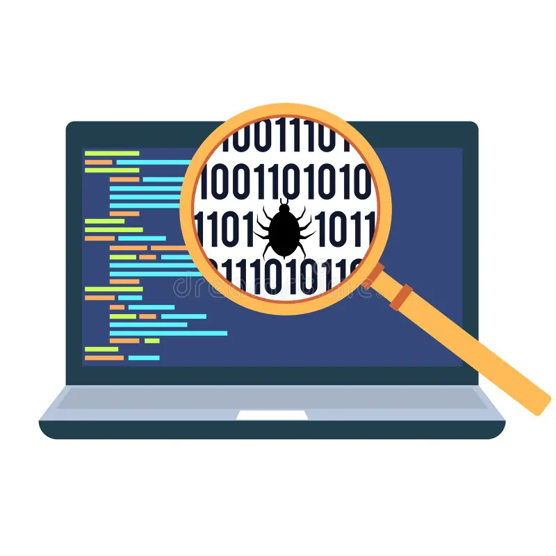
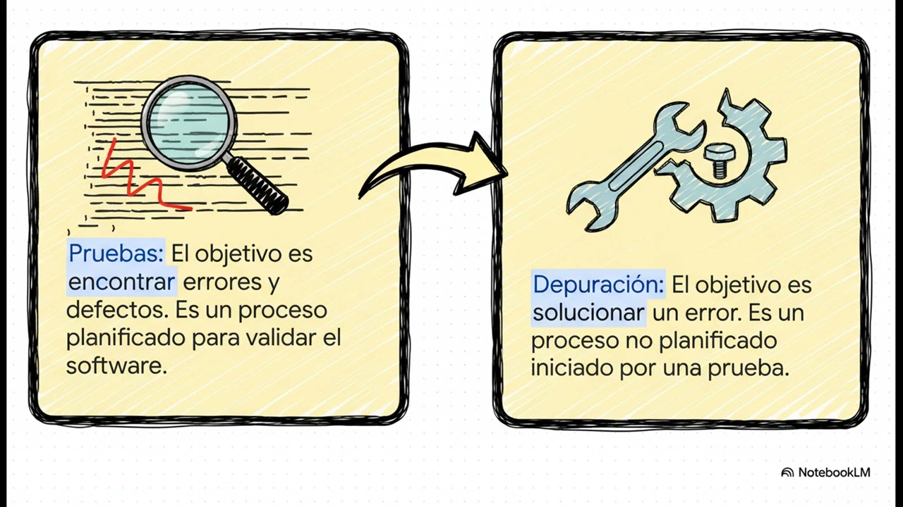
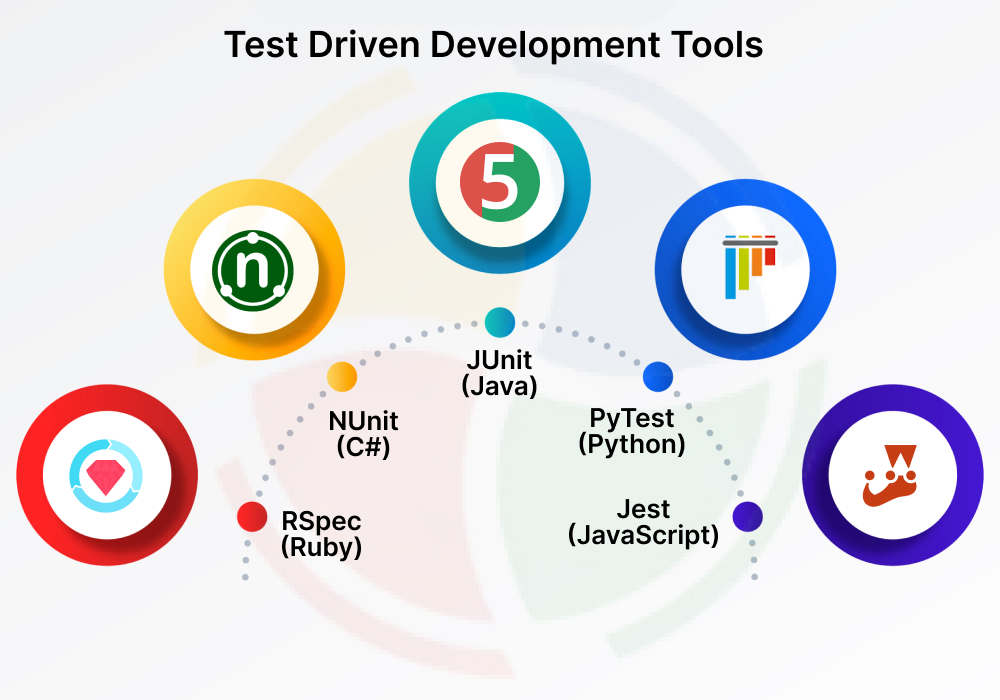
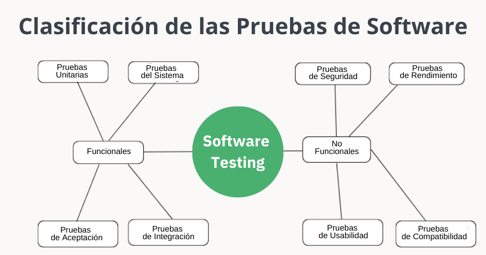
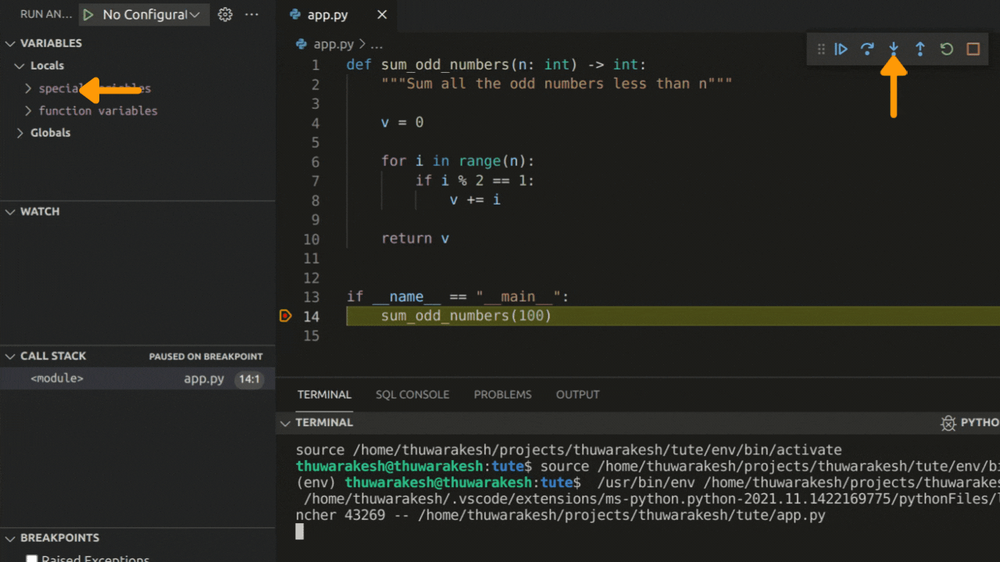

Índice de la UT3
- 1. Introducción a las pruebas y la depuración.
- 2. Tipos de pruebas.
- 3. Herramientas de depuración en IDEs.
- 4. Automatización de pruebas: JUnit y PyTest.
- 5. Documentación de pruebas e incidencias.
1. Introducción a las pruebas y la depuración
Las pruebas y la depuración son actividades clave del desarrollo de software: permiten detectar, analizar y corregir errores antes de que el producto llegue al usuario final.

Ambas actividades son fundamentales para garantizar la calidad del software.
1.1 Definición y objetivos de las pruebas
Las pruebas de software son el conjunto de actividades destinadas a comprobar que el programa cumple las especificaciones y a descubrir defectos antes de la entrega.
- Verificar que el software funciona correctamente en los escenarios previstos.
- Comprobar que se cumplen los requisitos funcionales y no funcionales.
- Detectar defectos que afecten estabilidad, rendimiento o seguridad.
- Reducir riesgos y costes asociados a fallos en producción.
1.2 Definición y objetivos de la depuración
La depuración (debugging) es el proceso de localizar, analizar y corregir errores en el código fuente cuando el programa no se comporta como se esperaba.
- Inspeccionar instrucciones, flujo de ejecución, variables y estado del sistema en tiempo de ejecución.
- Corregir los errores para que el programa sea estable y cumpla requisitos.
- Prevenir la aparición de errores derivados de una corrección mal aplicada.
- Apoyarse en herramientas del IDE (breakpoints, inspección de variables, etc.).
Pasos típicos en la depuración
Aunque cada bug es diferente, el proceso de depuración suele seguir una serie de pasos sistemáticos.

- Reproducción del error: provocar el fallo de forma controlada y repetible.
- Análisis del código: localizar el punto exacto donde el comportamiento es incorrecto.
- Prueba de soluciones: proponer cambios y verificar su efecto.
- Verificación final: ejecutar de nuevo el sistema para asegurar que el error desaparece sin introducir otros defectos.
1.3 Relación entre pruebas y depuración

- Las pruebas se diseñan de forma sistemática para comprobar el comportamiento del sistema.
- Cuando una prueba falla, se inicia un proceso de depuración para encontrar la causa raíz.
- Tras depurar, se reejecutan las pruebas para comprobar que la corrección es válida.
- Este ciclo se repite durante todo el desarrollo y mantenimiento del software.
1.4 Importancia de las pruebas y la depuración
Probar y depurar correctamente un sistema tiene impacto directo en la calidad del producto, la satisfacción del cliente y los costes del proyecto.
- Mejora de la calidad: menos fallos en producción y mayor confianza en el software.
- Reducción de costes: un error detectado en desarrollo es mucho más barato que en producción.
- Satisfacción del cliente: experiencias de uso más estables y fiables.
- Facilita el mantenimiento: un código bien probado es más sencillo de evolucionar.
1.5 Herramientas y técnicas comunes
Existen múltiples herramientas y técnicas que ayudan a automatizar pruebas y simplificar la depuración en proyectos reales.

- Frameworks de pruebas: JUnit (Java), PyTest (Python), NUnit, etc.
- IDEs con depurador integrado: Visual Studio, Eclipse, PyCharm, VS Code.
- Integración continua: ejecución automática de pruebas en cada cambio de código.
- Herramientas de análisis estático: inspección automática de calidad de código.
2. Tipos de pruebas
Para garantizar la calidad del software se emplean distintos tipos de pruebas, cada uno con un enfoque y un nivel de granularidad específico.

2.1 Pruebas unitarias
Las pruebas unitarias verifican el comportamiento de una unidad individual de código (función, método, clase) en aislamiento del resto del sistema.
- Se centran en pequeñas piezas de lógica, probadas de forma independiente.
- Normalmente se automatizan con frameworks como JUnit, NUnit o PyTest.
- Son muy rápidas y se ejecutan con frecuencia durante el desarrollo.
- Favorecen un diseño modular y reutilizable.
Ejemplo de prueba unitaria
Ejemplo simplificado de prueba unitaria que comprueba una función de suma de dos números.
- Se define una función pequeña y bien delimitada.
- Se crea un test que verifica el resultado esperado.
- Si cambia la implementación, el test alerta de regresiones.
def sumar(a: int, b: int) -> int:
return a + b
def test\_sumar():
resultado = sumar(2, 3)
assert resultado == 5 # Verifica que 2 + 3 = 52.2 Pruebas funcionales
Las pruebas funcionales validan que el sistema, desde la perspectiva del usuario, cumple los requisitos funcionales definidos.
- Se centran en el comportamiento observable del software.
- Frecuentemente implican recorrido de escenarios de extremo a extremo.
- Pueden implicar UI, base de datos y servicios externos.
- Herramientas típicas: Selenium (web), Postman (APIs), entre otras.
Ejemplo de prueba funcional
En una tienda online, una prueba funcional puede verificar todo el flujo de compra desde que el usuario añade un producto al carrito hasta la confirmación del pedido.
- Agregar un producto al carrito.
- Iniciar el proceso de pago.
- Introducir dirección y forma de pago.
- Confirmar que el pedido se registra correctamente en la base de datos.
2.3 Pruebas de integración
Las pruebas de integración comprueban que varios módulos o componentes del sistema funcionan correctamente cuando se combinan.
- Validan la comunicación entre capas (por ejemplo, servicio–base de datos–interfaz).
- Detectan errores que no aparecen en pruebas unitarias aisladas.
- Suelen centrarse en interfaces entre componentes y contratos de datos.
- Pueden apoyarse en herramientas como JUnit, contenedores ligeros o Docker para simular entornos.
Ejemplo de prueba de integración
Imagina una aplicación que consulta una base de datos y muestra los resultados en una interfaz web; la prueba de integración valida todo el flujo de datos.
- La capa de acceso a datos debe devolver la información correcta.
- La lógica de negocio debe procesar esos datos.
- El frontend debe mostrar correctamente los resultados al usuario.
3. Herramientas de depuración en IDEs
Los entornos de desarrollo integrados (IDE) incluyen depuradores potentes que facilitan el análisis del código en tiempo de ejecución.
- Puntos de ruptura (breakpoints).
- Depuración paso a paso.
- Inspección de variables y pilas de llamadas.
- Soporte para integración con pruebas automatizadas.

3.1 Puntos de ruptura
Un punto de ruptura detiene la ejecución del programa en una línea concreta para inspeccionar el estado interno en ese momento.
- Configuración: se colocan en el margen del editor (Eclipse, VS Code, PyCharm, etc.).
- Ejecución: el programa se pausa automáticamente al alcanzar el breakpoint.
- Inspección: se observan variables locales, globales, parámetros y estructuras de datos.
- Continuación: se puede seguir paso a paso o continuar hasta el siguiente punto de ruptura.
Ejemplo práctico: breakpoint en un bucle
En un IDE como Eclipse, colocar un punto de ruptura dentro de un bucle permite verificar cómo evoluciona una variable contador en cada iteración.
- Se monitoriza el valor de la variable en cada pausa.
- Permite detectar condiciones de salida incorrectas o índices fuera de rango.
3.2 Depuración paso a paso
La depuración paso a paso permite ejecutar el programa línea a línea para estudiar el flujo de ejecución con máximo detalle.
- Step Over: ejecuta la línea actual y pasa a la siguiente sin entrar en llamadas internas.
- Step Into: entra dentro de la función o método invocado.
- Step Return: ejecuta hasta el final de la función actual y vuelve al llamador.
- Ideal para comprender la interacción entre métodos y la evolución de las variables.
Ejemplo: depuración de una función de suma
En PyCharm o VS Code, es posible usar Step Into para entrar en una función y observar cómo se calculan los valores paso a paso.
def sumar(a, b):
resultado = a + b
return resultado
# Coloca un breakpoint en la línea de suma y usa Step Into para ver cómo se calculan los valores.3.3 Automatización de pruebas en el IDE
Los IDEs suelen integrarse con frameworks de pruebas (JUnit, PyTest) para ejecutar baterías de tests de forma rápida y visual.
- Ejecutar todos los tests tras un cambio de código.
- Ver qué casos han pasado o fallado de un vistazo.
- Acceder directamente a la línea de código que ha provocado el fallo.
- Integrar resultados de pruebas en pipelines de integración continua.
3.4 Documentación de pruebas e incidencias
A partir de los resultados de pruebas y sesiones de depuración, es fundamental documentar errores e incidencias de forma estructurada.
- Registrar fallos detectados durante la ejecución de pruebas automáticas y manuales.
- Incluir capturas, logs y pasos para reproducir el problema.
- Facilitar la comunicación entre desarrolladores, testers y otros roles.
4. Automatización de pruebas
La automatización de pruebas permite ejecutar conjuntos de tests de forma repetible y eficiente, reduciendo esfuerzo manual y errores humanos.
- Se apoyan en frameworks como JUnit (Java) o PyTest (Python).
- Son clave para proyectos ágiles e integraciones frecuentes.
- Se integran fácilmente en pipelines de CI/CD.
4.1 Concepto de automatización de pruebas
Automatizar pruebas consiste en definir casos de prueba que pueden ejecutarse automáticamente siempre que se cambie el código.
- Permite detectar errores de forma temprana en el ciclo de vida.
- Garantiza que nuevas funcionalidades no rompen las existentes.
- Reduce tiempos de regresión respecto a pruebas manuales.
- Facilita la repetición de pruebas bajo distintas configuraciones.
4.2.1 Framework JUnit (Java)
JUnit es uno de los frameworks más utilizados para realizar pruebas unitarias en aplicaciones Java, basado en anotaciones y aserciones.
- Anotaciones típicas:
@Test,@Before,@After,@BeforeClass,@AfterClass. - Permite agrupar pruebas y generar informes claros de resultados.
- Se integra con Maven, Gradle y servidores de integración continua.
@Test
public void testSumar() {
int resultado = 2 + 3;
assertEquals(5, resultado); // Comprueba que 2 + 3 = 5
}4.2.2 Framework PyTest (Python)
PyTest es un framework de pruebas para Python conocido por su sintaxis sencilla, uso de fixtures y amplia extensibilidad mediante plugins.
- No requiere clases, basta con funciones que empiecen por
test_. - Usa
assertpara realizar comprobaciones de forma legible. - Permite fixtures para preparar y limpiar el entorno de prueba.
- Soporta ejecución paralela y medidores de cobertura.
def test_suma():
resultado = 2 + 3
assert resultado == 5 # Verifica que la suma es correcta4.3 Integración en el ciclo de desarrollo (CI/CD)
Las pruebas automatizadas son un pilar de la Integración Continua (CI) y la Entrega Continua (CD), ejecutándose en cada cambio de código.
- CI: cada commit lanza la ejecución automática de todas las pruebas.
- CD: si las pruebas pasan, se puede desplegar la nueva versión de forma automática.
- Herramientas típicas: Jenkins, GitLab CI, GitHub Actions, Travis CI, etc.
- Generación de informes que muestran qué módulos están fallando.
4.4 Beneficios de la automatización de pruebas
Automatizar pruebas proporciona ventajas directas sobre la calidad del producto y la productividad del equipo de desarrollo.
- Detección temprana de errores y reducción de costes de corrección.
- Menor esfuerzo manual y más tiempo para pruebas exploratorias.
- Mayor calidad y estabilidad del código a lo largo del tiempo.
- Facilita la refactorización segura y el mantenimiento del sistema.
5. Documentación de pruebas e incidencias
Documentar pruebas e incidencias garantiza trazabilidad, comunicación efectiva y cumplimiento de estándares de calidad en el desarrollo de software.
- Informes de pruebas.
- Registros de incidencias.
- Seguimiento del estado de errores y correcciones.
5.1 Importancia de la documentación de pruebas
La documentación de pruebas sirve como evidencia objetiva de la verificación del sistema y apoya el mantenimiento futuro del software.
- Permite hacer seguimiento de resultados y evolución de la calidad.
- Aporta transparencia a todas las partes interesadas.
- Facilita el mantenimiento y las nuevas versiones del producto.
- Es clave en contextos regulados (financiero, sanitario, etc.).
5.2 Estructura de un informe de pruebas
Un informe de pruebas bien diseñado describe qué se ha probado, cómo y con qué resultados, incluyendo recomendaciones de mejora.
- Título y objetivo de la prueba.
- Alcance y entorno de prueba (SO, versión, herramientas).
- Casos de prueba ejecutados: datos de entrada, pasos, resultados esperados y obtenidos.
- Incidencias encontradas y su gravedad.
- Recomendaciones y conclusiones finales.
Ejemplo de informe de pruebas: búsqueda
Ejemplo de informe centrado en la verificación de la funcionalidad de búsqueda de un sistema.
- Objetivo: comprobar que las búsquedas por palabra clave devuelven resultados correctos.
- Caso 1: búsqueda "Java" → resultados correctos (acierto).
- Caso 2: búsqueda "Python" → sin resultados (error).
- Acción correctiva: revisar consultas a la base de datos e indexado de términos.
- Conclusión: funcionalidad parcialmente operativa; requiere corrección.
5.3 Gestión de incidencias: proceso
La gestión de incidencias abarca desde la detección de un fallo hasta su resolución y cierre, pasando por el registro y la priorización.
- Identificación y descripción detallada del problema.
- Registro de la incidencia en una herramienta (Jira, Bugzilla, Redmine…).
- Clasificación por gravedad e impacto.
- Asignación a un responsable para su corrección.
- Verificación de la solución y cierre de la incidencia.
Ejemplo de gestión de incidencia
Ejemplo: error en la búsqueda de productos donde el término "teclado mecánico" no devuelve resultados pese a existir en catálogo.
| Campo | Descripción |
|---|---|
| ID: | INC-2025-001 |
| Título: | Error en búsqueda de productos: "teclado mecánico" sin resultados. |
| Fecha de reporte: | 15/09/2025 |
| Reportado por: | Equipo de pruebas |
| Asignado a: | Desarrollador Backend |
| Prioridad: | Alta |
| Gravedad: | Crítica |
| Estado: | En progreso |
| Descripción: | La búsqueda no devuelve coincidencias para un término existente en el catálogo. |
| Pasos para reproducir: | 1. Ingresar "teclado mecánico" en el campo de búsqueda. 2. Pulsar el botón "Buscar". 3. Observar que no se muestran resultados. |
| Acción correctiva: | Revisar el índice de la base de datos y el proceso de indexación de productos para asegurar que el término se incluya correctamente. |
| Comentarios adicionales: | El error afecta a la experiencia del usuario y puede impactar en las ventas, por lo que se requiere una solución rápida. |
5.4 Importancia de documentar incidencias
Documentar correctamente las incidencias permite medir la calidad del software y coordinar el trabajo del equipo de forma eficiente.
- Seguimiento del estado de errores y su resolución.
- Facilita la colaboración entre desarrolladores y testers.
- Optimiza tiempos de desarrollo y mantenimiento.
- Contribuye al cumplimiento de estándares y auditorías.